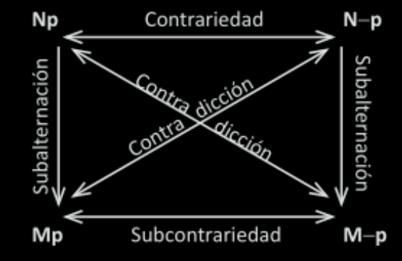
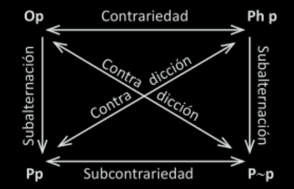

Introducción a la Lógica deóntica
Ejemplo de proposiciones deónticas
“Es obligatorio el uso de barbijo”
“Está permitido caminar sobre el pasto”
“Está prohibido estacionar las 24 horas”
Las proposiciones deónticas tienen una característica ausente en las proposciones con las que venimos trabajando. Las proposiciones deónticas no describen hechos del mundo, no dan cuenta de la realidad, sino que dicen ordenan al agente a hacer (o no hacer) algo o posibilitan o imposibilitan alguna acción.
Dadas las siguientes proposiciones:
“Está prohibido estacionar las 24 horas”
“Estamos en la secretaría de investigaciones de la Facultad de Derecho y Cs. Sociales de la UNT”
La primera no podemos decir si es una proposición verdadera o falsa, mientras que la segunda si. La primera tiene un contenido deóntico que la segunda no.
Hay que tener en cuenta esta diferencia entre las proposiciones porque va a ser determinante más adelante.
Nociones preliminares para la lógica deóntico
Lógica modal
La lógica modal alética va a dar cuenta de las siguientes nociones:
“Es necesario que…”; “Es posible que…”; “Es imposible que…”; “No es posible que…”
Por ejemplo:
“Es necesario que \('2+2=4'\)”; “Es posible que hoy llueva”; “Es imposible que salga sorteado el mismo número dos veces”
La lógica modal internaliza expresiones como “necesario”, “posible”, “imposible”, etc. Aquellas que hablen acerca de la modalidad de la verdad. Es decir los modos en que la verdad puede prensetarse acerca de la proposición. Si es necesaria una proposición hace referencia a que su valor de verdad no cambia, mientras que si es posible quiere decir que la proposición puede que algunas veces sea verdadera pero otras veces no.
Para poder formalizar este tipo de expresiones el sistema lógico incorpora dos denominados operadores. Los lógicos han añadido al sistema lógico dos operadores para dar cuenta de la posibilidad y la necesidad:
- \(N\): Necesario
- \(M\): Posible
Ahora bien, estos operadores se pueden definir entre si como se muestra en la siguiente figura:

Dada la interdefinibildad de los operadores modales, podemos analizar como se relacionan las proposiciones modales entre si.
Basandonos en el cuadro de oposiciones modales:

Esta incorporación de los operadores modales permiten expandir la expresividad del sistema lógico, algunas de las características relevantes para la lógica deóntica son los siguientes:
- La interdefinibilidad de operadores.
- La conectiva lógica de la impliación necesaria: \(p \Rightarrow q\) (\(p\) implica necesariamente \(q\))
- Los operadores modales no son veritativos-funcionales.
- Nuevas expresiones válidas:
- \(Np \supset p\) (Si es necesario \(p\) entonces \(p\))
- \(p \supset Mp\) (Si \(p\) entonces es posible que \(p\))
- Si \(\alpha\) es una fórmula válida, entonces \(N \alpha\) también lo es
- Todo lo que se sigue de una verdad necesaria es también necesariamente verdadero
Con esto ya es posible entender de mejor manera el sistema de lógica deóntica
El sistema de lógica deóntica de Von Wright
Lógica Deóntica El sistema clásico de Von Wright 13
Un poco de historia de la lógica deóntica
A continuación haremos un pequeño desvio para comentar algo de la historia de la lógica deóntica. Varios filósofos y lógicos han contribuido a su desarrollo. Algunos no lograron verla sistematizada como ser los casos de Alois Höffer (1853 – 1922) y Ernst Mally (1879-1944). El mayor exponente que logró sistematizar la lógica deóntica fue Georg Henrik von Wright (1916 - 2003). En la Argentina tuvimos dos grandes lógicos deónticos que hicieron sus propios aportes y desarrollos a la lógica deóntica y ellos fueron Carlos Eduardo Alchourrón (1931- 1996) y Eugenio Buligyn (1931 - 2021).
Aquí nos enfocaremos en el sitema de lógica ideado por Von Wright y algunos desarrollos posteriores por parte de Buligyn para responder a algunos problemas abiertos dejados por el sistema de Von Wright.
Operadores modales deónticos
Como hemos visto más arriba, la lógica modal introduce los operadores modales para poder formalizar las proposiciones aléticas. El sistema de lógica deóntica va a realizar una analógica con los operadores modales y las nociones deónticas que hemos visto al inicio (permitido, no permitido, obligatorio, prohibido).
Para ello va a analogar cada uno de los operadores modales, con los operadores deónticos:

Por consiguiente también podemos realizar una interdefinibildad de operadores deónticos:

Como queda conformado el sistema clásico deóntico
Con los operadores deónticos añadidos a la lógica proposicional genera el sistema clásico (SC) Von Wright. Dado de esta manera el sistema tiene algunas características importantes:
- Toda tautología de lógica proposicional es válida en SC si las variables proposicionales son reemplazadas por fórmulas deónticas.
- Se aceptan las siguientes definiciones:
- \(Ph =_{def} \sim P\)
- \(O =_{def} \sim P \sim\)
- Se aceptan como axiomas las leyes de distribución
- Se acepta el principio de permutación:
- \(Pp \lor P\sim p . \equiv . Op \supset Pp\)
Este sistema lógico es un gran avance para la lógica deóntica ya que permite formalizar las proposiciones deónticas (como las que hemos visto en un principio) pero en su analogía con la lógica modal, trae aparejado algunos problemas que no pueden ser resueltos con los recursos propios del sistema.
Dilema de Jørgensen
El denominado dilema de Jörgiensen fue presentado en Jörgensen (1937).1 Consta de un dilema entre las relaciones que hay entre las normas y la disciplina lógica.
El dilema puede presentarse de la siguiente manera:
- En contextos normativos también se usan los términos “y”, “o”, “si…entonces…”, “no” de manera similar al lenguaje descriptivo. Y al hacer inferencias se usan normas como premisas y conclusiones y parecen ser lógicamente válidas. Por tanto, hay una lógica de normas.
- La relación de implicación (consecuencia lógica) y contradicción se definen en términos de verdad (como las conectivas lógicas). Por tanto, solo expresiones V o F pueden ser estudiadas por la lógica.
- Las normas carecen de valor de verdad.
- No hay relación lógica entre normas y, por tanto, no hay lógica de normas.
Para poder evitar la conclusión se puede tomar varias posturas:
Si se quiere evitar la Tesis 4:
- Se abandona la Tesis 2 o
- Se abandona la Tesis 3.
Si se acepta la Tesis 4:
- Se tiene que desarrollar una teoría alternativa para dar cuenta lo expresado en la Tesis 1.
Algunas posibles soluciones al dilema
Interpretaciones descriptivas o prescriptivas
Para poder encontrar algunas de las soluciones del dilema de Jörgensen pueden hacer ciertas distinciones conceptuales. Los términos deónticos permitido, prohibido, obligatorio son ambiguos. No tienen una sola definición, sino múltiples. Por lo que pueden ser interpretados de dos maneras, al menos:
- Interpretaciones prescriptivas (expresión de normas)
- Lo que expresan son lo que la norma ordena.
- Interpretaciones descriptivas (expresión de proposiciones acerca de normas)
- Lo que expresan son proposiciones que hablan acerca de las normas. No son normas en sí misma.
Por ejemplo Bulygin (1995) utiliza los operadores O y P como prescriptivos:
- \(Op\) expresa una norma que ordena \(p\)
- \(O\sim p\) expresa una norma que prohíbe \(p\)
- \(Pp\) expresa una norma que permite \(p\)
Considerar a los operadores descriptivos enuncian el estatus deóntico de un estado de cosas o acciones. Dicho estatus está conferido por la norma. Las acciones suponen que un agente ejecute o no la norma. Por lo que hay una referencia a la norma la cual antes no estaba.
Sistema de normas
Otra posible solución es entender al derecho como un sistema de normas. Cada una de las proposiciones deónticas se encuentran dentro de un sistema de normas \((\alpha)\)
Las considiciones en que los operadores deónticos aparecen dentro de un conjunto de normas se complejiza:

Para el caso de la permisión hay que considerar:
- Permisión positiva: Está permitido en \(\alpha\)
- Permisión negativa: No está prohibido en \(\alpha\)
Añadido del sistema normativo \(\alpha\)
Dado un sistema normativo \(\alpha\):
- \(Op\alpha\) (\(p\) es obligatorio en \(\alpha\))
- \(P^{+}p\alpha\) (\(p\) está positivamente permitido en \(\alpha\))
- \(P^{-}p\alpha\) (\(p\) está negativamente permitido en \(\alpha\))
Definidas formalmente como:
- \(Op\alpha =_{def} Op \in Cn(\alpha)\)
- \(P^{+}p\alpha =_{def} Pp \in Cn(\alpha)\)
- \(P^{-}p\alpha =_{def} O\sim p \notin Cn(\alpha)\)
Diferencias con el Sistema Clásico
Las expresiones de la lógica de proposiciones normativas son relativas a un sistema de normas. Al incorporar la noción de sistema de normas, esto permite que el concepto de permisión se complejise: hay dos conceptos de permisión. También lleva a que los operadores prescriptivos sean interdefinibles.
Claramente la idea de sistema de normas, presupone que existe una relación lógica entre normas. Por lo que las s consecuencias de \(\alpha\), es el conjunto de normas que se siguen lógicamente de \(\alpha\).
Así como hay dos tipos de permisión, también este sistema da lugar a dos tipos de negaciones:
Hay una negación interna y otra externa. Negar algo dentro de las proposiciones normativas: * \(\alpha\) contiene una norma que prohibe \(p\) * \(\alpha\) no contiene una norma que permite \(p\)
Esto lleva a considerar estas dos negaciones de la siguiente manera:
- Externa (\(-\)): Significa que la norma que ordena \(p\) no pertenece a \(\alpha\).
- Interna (\(\neg\)): Significa que la norma que permite no \(p\) pertenece a \(\alpha\).
La negación interna puede mostrar un sistema de normas inconsistente o incompleto.
Operador facultativo \((F)\)
Ante la fórmula \(Pp \lor P\sim p\) puede interpretarse como “uno puede hacer \(p\) y/o dejar de hacerlo” es decir, queda en la decisión del agente el hacerlo o no. Esto lleva a presentar otro tipo de operador que refleje este hecho normativo, el operador facultativo. Denominado de esta manera ya que es el agente quien tiene la facultad de llevar a cabo (o no llevar a cabo) la acción.
Esto quiere decir que seguir la acción \(p\) es facultativo, formalmente de la siguiente manera:
- \(Fp . \equiv . Pp \land P\sim p\)
- \(Fp . \equiv . \sim Op \land \sim O\sim p\)
- \(Fp . \equiv . \sim Php \land \sim Ph\sim p\)
Cuadro de oposiciones deónticas.
Por último, las relaciones de oposición deónticos queda de esta determinada manera respecto del cuadro de oposición de los operadores modales:

Notas
Un dilema es una presentación de dos opciones o situaciones las cuales ambas presentan el mismo resultado trágico o no deseado.↩︎